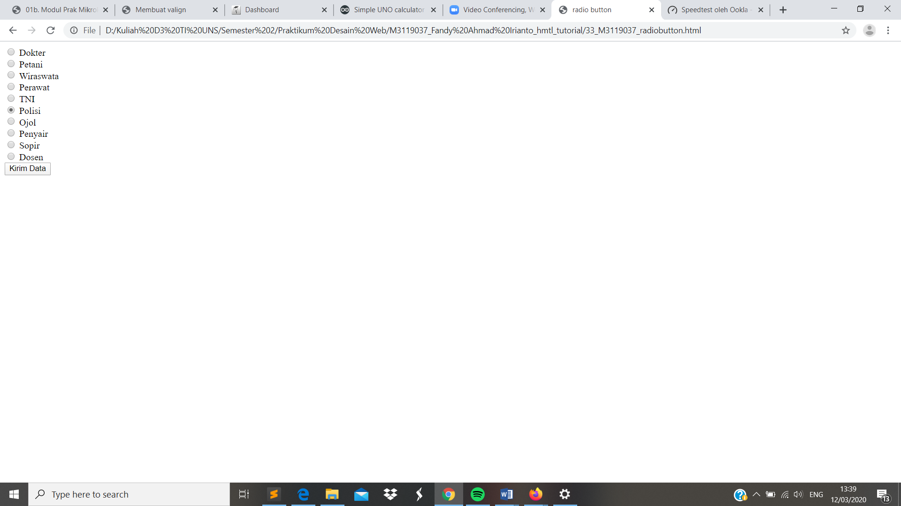

Radio Button
//Komponen lain dari form yakni Radio Button. Dimana radio button digunakan untuk input data yang bersifat optional. Dalam hal ini user dimintai option pilihan, dengan hanya dapat memilih satu pilihan dari option yang tersedia. Untuk perintah yang digunakan yakni dengan tag < input type=”radio” name=”namakomponen” value=”nilai” />
Codingan
<!DOCTYPE html>
<html>
<head>
<meta charset="UTF-8">
<title> radio button</title>
</head>
<body>
<form method="post" action="">
<input type ="radio" name="job" value="Dokter" /> Dokter <br />
<input type ="radio" name="job" value="Petani" /> Petani <br />
<input type ="radio" name="job" value="Wiraswasta" /> Wiraswata <br />
<input type ="radio" name="job" value="Perawat" /> Perawat <br />
<input type ="radio" name="job" value="Tentara" /> TNI <br />
<input type ="radio" name="job" value="Polisi" /> Polisi <br />
<input type ="radio" name="job" value="Ojol" /> Ojol<br />
<input type ="radio" name="job" value="Penyair" /> Penyair <br />
<input type ="radio" name="job" value="Sopir" /> Sopir<br />
<input type ="radio" name="job" value="Dosen" /> Dosen <br />
<input type="submit" name="submit" value="Kirim Data" />
</form>
</body>
</html>
Tampilan Hasil Percobaan

Kesimpulan
Pada percobaan membuat Radio Button kali ini dapat disimpulkan bahwa Radio Button dapat dibuat dengan menggunakan tag < input type=”radio” name=”namakomponen” value=”nilai” /> . Dalam radio button sendiri kita dapat memasukkan beberapa option namun hanya dapat memilih satu option sajar diantara beberapa option yang akan ditampilkan.